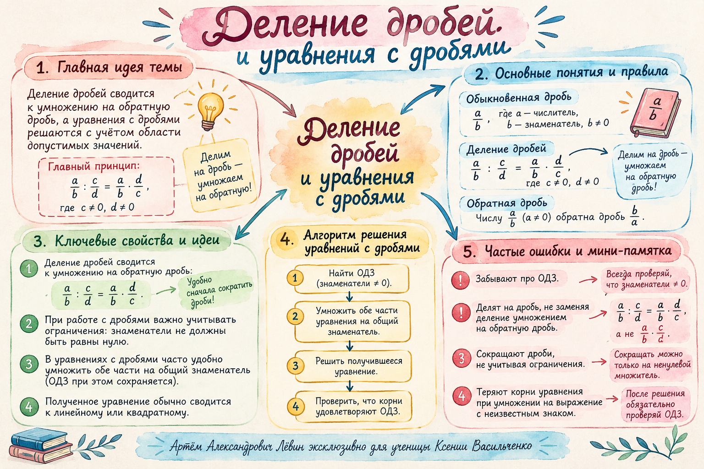

Урок 22 / 10 / 2026 · Глава о дробях
Деление дробей и уравнения
Превращаем деление в знакомое умножение, сокращаем дроби и последовательно находим неизвестные компоненты уравнения.
Главная идея
Переворачиваем только делитель.Перед вычислением проверяем: делитель отличен от нуля.
Делите через умножение
Чтобы разделить на дробь, умножьте на обратную ей дробь. Первая дробь остаётся неизменной.
Для формулы требуется, чтобы знаменатели были отличны от нуля, а делитель также был ненулевым: b ≠ 0, c ≠ 0, d ≠ 0.
Две обыкновенные дроби
Сокращение до умножения
Приведите к удобному виду
Натуральные, смешанные и десятичные числа можно представить в виде обыкновенных дробей.
Натуральные числа
Представьте целое число дробью со знаменателем 1.
И наоборот:
Смешанные числа
Сначала переведите смешанное число в неправильную дробь.
Десятичные дроби
Считайте знаки после запятой и сократите полученную дробь.
Десятые и сотые
Одна и две цифры после запятой меняют знаменатель.
Полезные соответствия
| 0,5 | 0,25 | 0,75 | 0,2 |
| 0,8 | 0,125 | 0,08 | 0,05 |
Одно действие — один смысл
Переключайте примеры и проходите решения по этапам. На каждом шаге проверяйте, что именно изменилось.
1 / 4 · Запишите деление
Первую дробь пока не изменяем.
2 / 4 · Найдите обратную дробь
У делителя 2/5 меняем числитель и знаменатель местами.
3 / 4 · Замените действие
Деление превратилось в умножение на 5/2.
4 / 4 · Вычислите
Итоговая дробь несократима.
1 / 4 · Запишите частное
Сначала преобразуем смешанное число.
2 / 4 · Перейдите к неправильной дроби
2 × 5 + 1 = 11.
3 / 4 · Умножьте на обратную
Обратная дробь для 1/3 — число 3.
4 / 4 · Выделите целую часть
33 : 5 = 6 (остаток 3).
1 / 4 · Запишите деление
Переведём 0,75 в обыкновенную дробь.
2 / 4 · Представьте дробь в сотых
Два знака после запятой означают сотые.
3 / 4 · Сократите и замените действие
75/100 = 3/4.
4 / 4 · Найдите результат
Четвёрки сокращаются.
Сначала скобки
В длинном выражении запишите действия отдельно: сначала внутреннее деление, затем умножение на найденный результат.
Первое действие
Второе действие
Символ деления меняется на знак умножения одновременно с переходом к обратной дроби.
Найдите, что скрывается за буквой
Определите неизвестный компонент. Если справа можно выполнить действия, сначала упростите известную часть.
| Уравнение | Как найти неизвестное |
|---|---|
| при a ≠ 0 | |
Неизвестный множитель
Сначала найдите известную часть
Сначала неизвестное слагаемое
Неизвестное вычитаемое
Буквенное выражение в начале
Для a × x = c вычисляйте c : a. При переходе к следующей строке берите новое значение правой части. После решения проверьте найденный корень подстановкой.
10 задач для закрепления
Сначала решите задания без подсказок. Затем раскройте ответы и отметьте выполненные задачи.
- 01
Показать ответ и ориентир
Замените деление умножением на 4/3.
- 02
Показать ответ и ориентир
Представьте 6 дробью со знаменателем 1.
- 03
Показать ответ и ориентир
Переверните делитель — дробь 2/3.
- 04
Показать ответ и ориентир
Переведите смешанное число в 3/2.
- 05
Показать ответ и ориентир
0,75 = 3/4.
- 06
Показать ответ и ориентир
0,08 = 8/100 = 2/25.
- 07
Показать ответ и ориентир
Сначала выполните деление в скобках: 7/12.
- 08
Показать ответ и ориентир
Неизвестный множитель: (8/7) : (2/7).
- 09
Показать ответ и ориентир
Сначала найдите (4/9)b = 4/7.
- 10
Показать ответ и ориентир
Сначала получите (1/4)x = 13/5 и проверьте подстановкой.
Пособие и памятка
Полный чек-лист с тренировкой и ответами доступен в PDF; иллюстрированная памятка помогает вспомнить главные правила.

